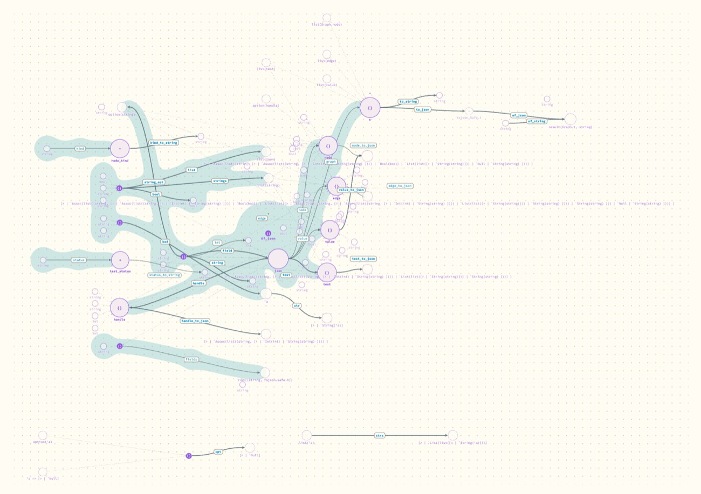
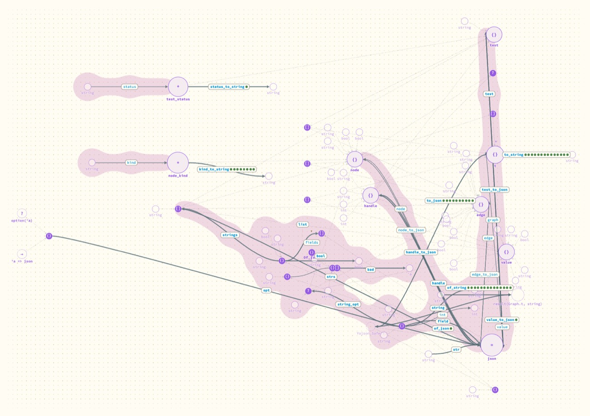

Where should a test's pip go when the tests are not written inline?
On every function of the project the test reaches. It is honest and it works, but for Portolan's own tests it puts 31 pips on one arrow, which says the tests all enter by one door.
- Why
Andrew saw no tests at all on Portolan's own code. Its tests are separate Alcotest cases in a test folder, and the extractor only knew tests written inline beside the function. In Hazel a test sits in the program next to what it tests, so the question of where its pip goes never came up.
- What was done
-
A helper agent taught the extractor to find Alcotest cases, including ones made through a wrapper function, and to follow each case through the helpers in its own file to the project functions it ends up calling. The pip goes on each of those. The watcher reads which cases failed from the test run's output.
It then broke two tests on purpose in a served copy to see the pips change. I checked the merged result on Portolan itself.
What happened
Extract.extract with the two broken tests in red. 32 tests were found; 31 of them reach this one function.The tests are found and their status is right. But almost every test builds a graph from an example project and then looks at the result, so they all pass through extract and the row of pips says little about which behaviour each one checks.
Other rules were considered: only functions the test names directly (the pips land on the test file's own helpers, which are not interesting), one pip per suite, or a count once there are more than a few.
The same round also fixed what the picture got wrong

Graph: inferred JSON types printed in full, up to 91 characters, across everything.
json node that the readers meet at, lists and options as small dots fed by their parts, and pips.The loose types at the bottom of a module, which Andrew thought looked like artifacts, were three things. Some were artifacts: fields of other modules' records leaking in. Those are gone. Some were real but unconnected: unnamed lists, options and tuples, which now have lines to what they are made of. The rest are the module's own state, and now carry the value's name, as in events: Dynarray.t(string).
- What it means
Pips by reachability show how tests enter the code, which is worth knowing, but not what each one is about. A test that only observes results needs another way to say which definition it speaks for: its name, the functions it asserts on, or a note by the author.
- Open
-
Whether 31 pips on one arrow is acceptable, or should fold into a count.
Unnamed types that are still drawn as text (function types,
result(a, b)) get no lines to the types inside them.